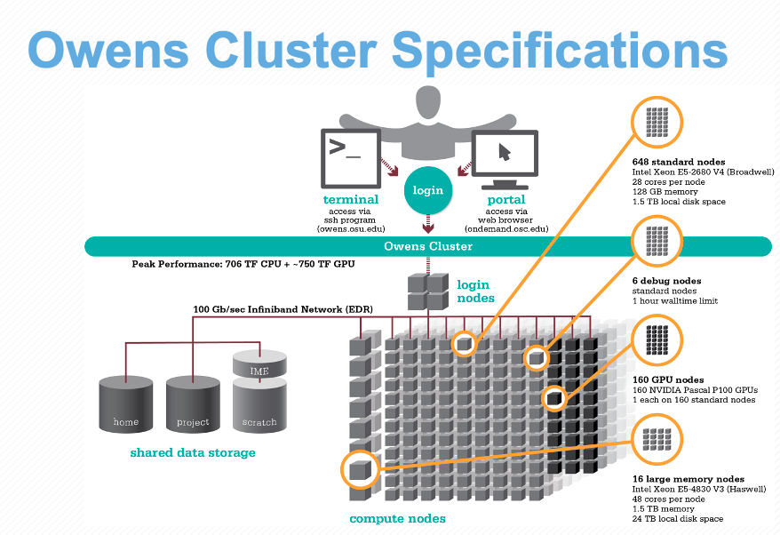

A closer look at OSC
Week 5 - part I
In this session, …
1 The Structure of a Supercomputer Center
1.1 Hierarchical components
In week 1, you learned that a Supercomputer Center like OSC typically has multiple supercomputers (AKA clusters), each of which in turn consists of many nodes (basically computers). But I omitted a fourth “level” in this hierarchy which are:
- Core / Processor / CPU / Thread — Components of a computer that can each (semi-)indendepently be asked to perform a computing task like running a bioinformatics program. While these terms are not technically all synonyms, we can treat them as such for our purposes.

We also talked about a supercomputer as having three main parts: file systems, login nodes, and compute nodes.

1.2 File Systems
Let’s expand our earlier list of file systems, and look at this table in a bit more detail:
| File system | Located within | Quota | Backed up? | Auto-purged? | One for each… |
|---|---|---|---|---|---|
| Home | /users/ |
500 GB / 1 M files | Yes | No | User |
| Project | /fs/ess/ |
Flexible | Yes | No | OSC Project |
| Scratch | /fs/scratch/ |
100 TB | No | After 90 days | OSC Project |
| Compute | $TMPDIR |
1 TB | No | After job completes | Compute job |
So far, we have mostly been working in the “project dir” (/ess/) for our OSC project. When you use OSC for a research project, you would use a different OSC project, likely one that’s either that specific research project or a general use project of you lab/PI. But you should also then mostly be working in the project (/ess/) dir, which offers backed up, permanent and flexible amounts of storage.
One other hand, scratch dirs are temporary and not backed up, while the storage space of home dirs cannot be expanded (and file sharing / collaborating is also a but more difficult with home dirs).
So in which cases are the non-ess file systems useful?
- Your home dir can be useful for files you use across projects, like some software.
- The two main advantages of Scratch space are that it is effectively unlimited and that it has faster data read and write (“I/O”) speed than Home and Project space.
- Compute storage space is even more fleeting: as soon as the compute “job” in question has stopped (e.g. your script has finished), these files will be deleted. We’ll talk a bit more about this type of storage later, as using them can save time for I/O-intensive analyses.
TMPDIRis an environment variable that contains the path to the node storage directory.Like Home directories, Project directories are backed up daily. You don’t have direct access to the backups, but if you’ve accidentally deleted some important files (Linux has no thrash bin!), you can request them to be restored to the way they were on a specific date.
File Systems are shared among the clusters While OSC’s current two clusters, Owens and Pitzer, are largely separate, they do share the same File System. This means that you can access your files in the exact same way regardless of which supercomputer you have connected to.
1.3 Compute node usage
You can use compute nodes by putting in requests for resources, such as the number of nodes, cores, and for how long you will need them. Because many different users are sending such requests –i.e., for “compute jobs” or just “jobs”– all the time, there is software called a job scheduler (specifically, Slurm in case of OSC) that considers each request and assigns the necessary resources to the job as they become available.
Requests for compute node jobs can be made either through the OnDemand website or with commands like sinteractive and sbatch.
For instance, when we start an RStudio session at OSC, we first have to fill out a little form with such a request, and then RStudio will run on a compute node. This is an example of using a compute node interactively — “you” are located on a compute node, and any R command you type will be executed there. More commonly for genomics work, you’ll be using compute nodes non-interactively, that is, through “batch jobs”. When doing so, you will write a script in advance and send it to the job scheduler, which will run the script on a compute node that “you” don’t go to at all.
Compute nodes come in different shapes and sizes. “Standard nodes” are by far the most numerous (e.g., Owens has 648 and Pitzer has 564 of them) and even those vary in size, from 28 cores per node (Owens) to 48 cores per node (the “expansion” part of Pitzer). Some examples of other types of nodes are ones with extra memory (largemem and hugemem) and ones that provide access to GPUs (Graphical Processing Units) rather than CPUs.
Fortunately, you don’t tend to have to think much about node types as you start using OSC, since Standard nodes are automatically picked by default, and those will serve you well for the vast of majority genomics analysis. Some examples where you might need a different type of node are genome or transcriptome assembly where you might need nodes with a lot of memory, or Oxford Nanopore sequence data basecalling where you might need GPUs.
When we talk about “memory”, this refers to RAM: the data that your computer has actively “loaded” or in use. For example, if you play a computer game or have many browser tabs open, your computer’s memory will be heavily used. Genomics programs sometimes load all of the input data from disk to memory for fast access, or hold a huge assembly graph in memory, and as such may need a lot of memory as well.
Don’t confuse memory with file storage, the data that is on disk, some of which may have been unused for years.
1.4 Putting it together
All these parts are connected together to create a supercomputer — for example, let’s take a look at the specs for Owens now that we understand the components a bit better:

1.5 System Status (in Clusters)
Moving on to “Clusters”, we’ll start with the item at the bottom of that dropdown menu, “System Status”:

This page shows an overview of the current usage of the two clusters, which might help to decide which cluster you want to use and set some expectations for compute job waiting times:

2 At-home reading
Administrative miscellaneae
Requesting & managing OSC Projects, and user accounts
Generally, only PIs request OSC projects, and they typically manage them as well. OSC has this page with more information on how to do so. Whoever manages an OSC Project can add both existing OSC users and new users to the Project. Anyone added to an OSC Project will have access to the project’s directories, and will be able specify this Project when issuing compute node resource requests.When you get added to an OSC Project and don’t yet have an OSC account, you will automatically receive an email with a link that allows you to create an account. It is not possible to create an account before having been added to an OSC Project.
Billing
OSC will bill OSC Projects (not individual users), and only for the following two things:- File storage in the Project Storage file system
- Compute node usage by “core hour” (e.g. using 2 cores for 2 hours = 4 core hours)
The prices for academic usage are quite low (see this page for specifics), and importantly, at OSU, they are often covered at the department level such that individual PIs do not have to directly pay for this at all.
When you use OSC, it’s good practice to acknowledge and cite OSC in your papers, see their citation page.
For many questions such as if you have problems with your account, have problems installing or using specific software, or don’t understand why your jobs keep failing, you can email OSC at oschelp@osc.edu. They are usually very quick to respond!